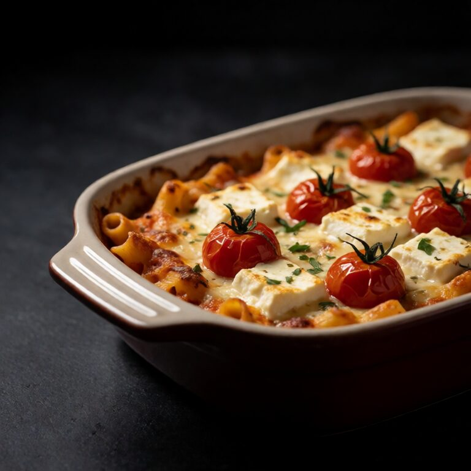

The TikTok pasta that broke the internet. Roasted tomatoes, melted feta, done.
Small-batch pasta rewards the same care as a larger pot. Salt the water, finish the noodles with the sauce, and serve as soon as the texture is right.
At a Glance
Prep
5m
Cook
35m
Serves
1
Difficulty
Easy
Ingredients
Method
- 01
Roast
Preheat your oven to 400F/200C. Place the 200g of cherry tomatoes and 3 cloves of smashed, unpeeled garlic in the center of a baking dish. Nestle the 100g block of feta right in the middle. Pour 3 tablespoons of olive oil over the tomatoes and feta, and sprinkle with chilli flakes. Roast for 35 minutes until the tomatoes burst and release their juices, and the feta turns golden on top.
- 02
Cook pasta
While the feta roasts, boil the 100g of pasta in heavily salted water until al dente. Before draining, scoop out a full cup of the starchy pasta water and set it aside.
- 03
Combine
Remove the baking dish from the oven. Squeeze the soft roasted garlic out of its skins and mash it into the melted feta with a fork. Add the drained pasta and a splash of the reserved pasta water. Stir everything together vigorously until the cheese and tomato juices emulsify into a glossy, silky sauce. Top with a handful of torn fresh basil.
Slop Notes
Use the best quality block feta you can find. Pre crumbled will not melt the same way.
Recipe by foidslop · How we create our recipes
Keep eating